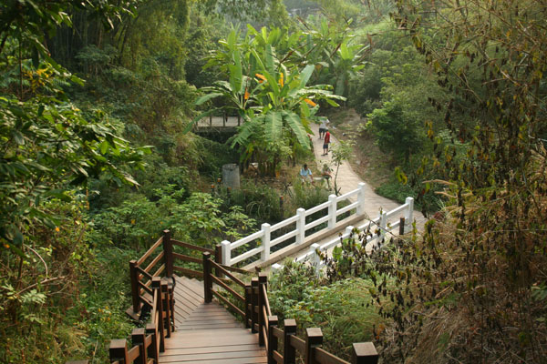

登山入口處：台中市北屯區經補路一段383巷
9號步道是所有大坑步道裡難易度最低、等級最新手的一條登山步道，全長約1.6公里，前段多為平緩的坡道，步道沿途有許多小吃攤或是販售飲料的小攤販，沒有準備登山補充糧食也不用擔心會肚子餓，後段有一些階梯但都算輕鬆的休閒等級。雖然在大坑步道群裡9號步道屬於較新建成的步道，台中市政府還在2020年啟動修整計畫，花了3個月時間整修步道後段的木棧道，新設了觀景平台供民眾登山時休息可以眺望景觀，把台中市區的景色盡收眼底!
登山入口處：台中市北屯區經補路一段383巷

9-1號步道跟9號步道還有10號步道的登山入口處相同，三條步道的終點也連結相接，可以依照個人體能狀況選擇不同步道上山下山。因為難度低，假日人潮比較多，也會有不少攤販市集出攤，9-1號步道啟程處還設有農夫市集，下山後可以來這裡購買一些大坑在地的農產品。
9-1號步道全長只有大約600公尺，是所有大坑步道裡最新建成也最短的一條。跟9號步道頭尾相接，不一樣的是9-1號步道全程大部分都是以階梯為主，上下山比起9號步道要考量一下腿力跟腳力。木棧道階梯經過整修後平整好走，來登山健行想要多運動的朋友可以選擇挑戰9-1號步道。
登山入口處：由松竹路一段公墓間的建成巷進入，沿途順指示牌經由6號停車場進入
大坑步道群西側，也很適合依照體力跟喜好搭配上下山路線的則是步道終點都連結到風動石公園的6號、7號跟8號步道。
7號步道全長大約1.3公里，多為坡度平緩的石頭步道，步道沿途大多被周圍蔥鬱的樹林環繞，被大自然包圍十分適合全家大小悠閒地散步健行。